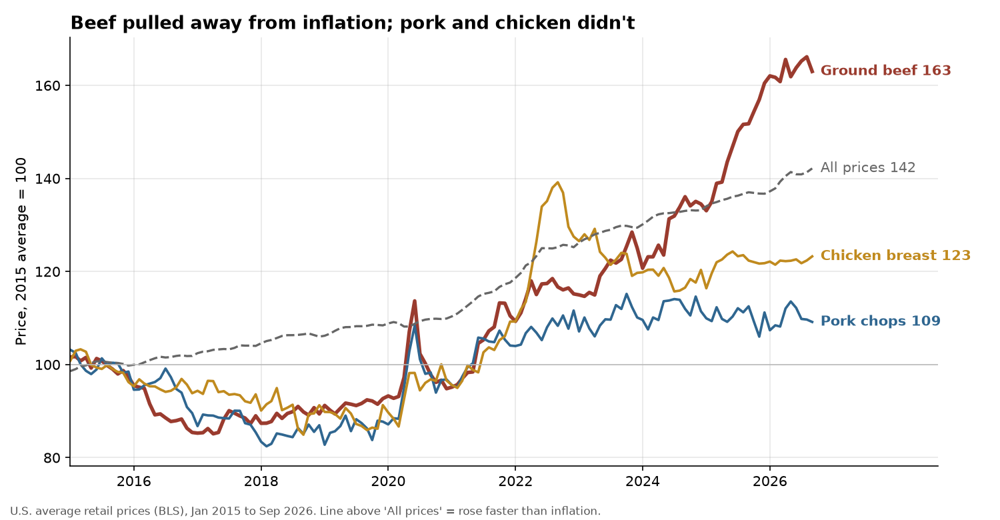
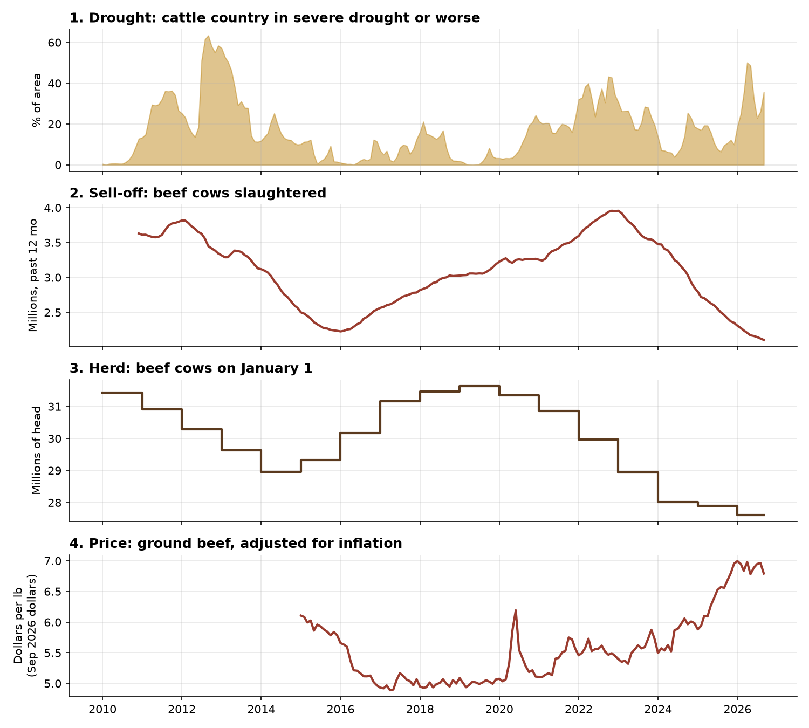

Data science project · U.S. meat prices, 2015 to September 2026
Why does meat cost so much now?
Beef, pork and chicken prices since 2015, the events behind each jump, and who gets each
retail dollar. Built from free public data from the Bureau of Labor Statistics and the U.S. Department of
Agriculture, with every step shown in notebooks.
Ground beef since 2015, against +42% for prices in general
+15%
Beef after inflation: the only one of the three meats that got more expensive in real terms
−13%
The U.S. beef cow herd since its 2019 peak
43→54%
Ranchers' share of each retail beef dollar, 2019 to 2025

Retail prices, rebased so the 2015 average = 100. A line above "All prices" rose faster than inflation.
Key findings
Beef is the outlier. Ground beef is up 63% since 2015, while prices in general rose
42% and groceries 33%. After inflation, beef costs 15% more; pork chops cost
23% less and chicken breast 13% less.
The cause is a cattle shortage, and drought started it. Drought across cattle country pushed ranchers
to sell off cows. The sell-off peaked in 2022, when 13.2% of the beef cow herd was slaughtered
in one year, and the herd shrank 13% from its 2019 peak. Fewer cows means fewer calves and
less beef for years. The same chain played out after the 2011–2013 drought.
Sudden events explain little of beef's rise. Of 16 dated events, only the 2020 COVID plant closures
clearly shifted all three meats (11–17% above where prices were heading, then fading within months). For beef,
plant fires and closures, the JBS cyberattack and screwworm show no clear shift.
The popular explanations don't hold up. Plant fires, Colorado's bird-flu culls and the cage-free egg law
came at times when prices didn't shift. Chicken's 2022 spike was real, but it lines up with feed costs and bird flu.
Ranchers are getting a bigger share of the money. Their share of each retail beef dollar rose from
43% in 2019 to 54% in 2025, which points to scarce cattle rather than wider
packer or store margins.

Read top to bottom: drought, then the cow sell-off, then a smaller herd, then a higher real beef price.
How it was done
Collected public data from four sources: retail prices and inflation (BLS), price spreads and cattle
counts (USDA ERS and NASS), and drought (U.S. Drought Monitor).
Cleaned and combined everything into one monthly table from 2010 on, documenting every fix,
including problems found in the official files.
Explored and tested. Patterns were charted, 16 events were dated and sourced, and each event was tested by
forecasting where prices were heading and checking whether the gap was bigger than in ordinary months.
Automated. One command re-downloads, rebuilds and checks the data, and automated tests run on every
change.
Limits. These are national averages; local prices differ. October 2025 is estimated because the
government shutdown stopped price collection that month. Overlapping events can't be told apart. Testing of the
drought → herd → price chain and a final verdict are still in progress.
The analysis, step by step
Each notebook explains what it's looking for, shows the code and its result, then how to read it
and what it means.